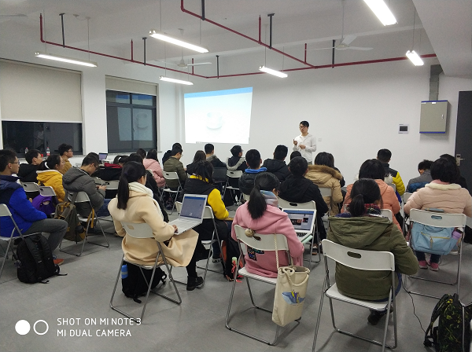
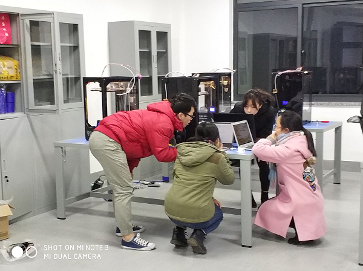
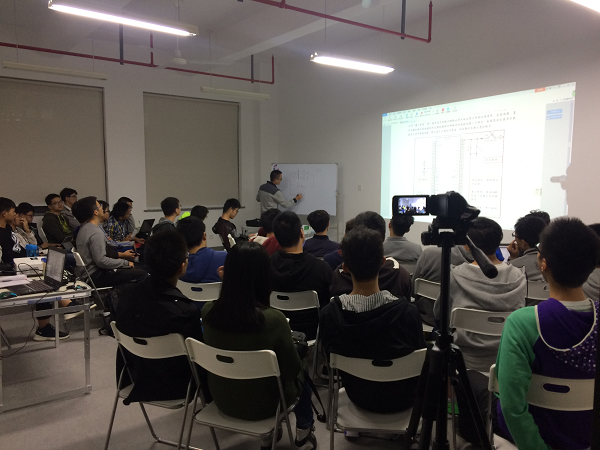
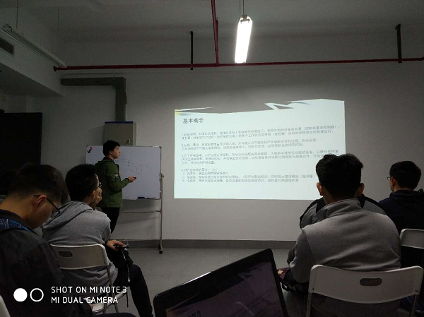
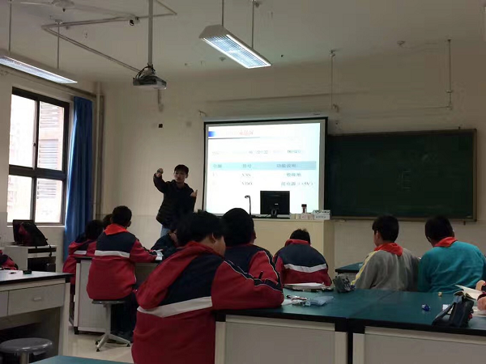
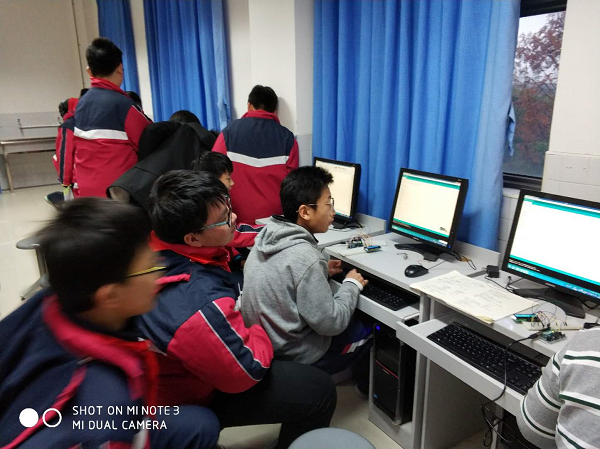

上海大学自强队“3D打印项目”和“智能模型车”进社区学院宣讲
2017年12月11日，上海大学自强队再次来到社区学院，为冬季学期在社区学院课外培养中心开展的“3D打印课程”招募学员，本课程的授讲人是来自自强队智能车组第12届的大四骨干队员：文卓和刘建伟，该课程总共设计6讲，辅以课下的实践环节。通过当天的宣讲和面试，共计招募到大一学员33名，社区学院课外培养中心为该课程的实施购置了桌椅、3D打印机等硬件配置，机自学院为该课程的实施解决了场地问题。
 刘建伟同学为大一同学现场指导“3D打印课程”
2017年12月12日晚19点，“3D打印”第一课在东区318实验室开讲，机自学院团委书记高红梅老师，社区学院辅导员马文静老师也来到了现场体验，该课程还吸引了课程外的其他同学共56名同学前来体验，同学们参与热情极高，超过了预期的效果。2017年10月下旬，上海大学自强队智能车组提前了本年度的纳新计划，并率先在大一新生中推行“苗圃计划”，通过前期的初步筛选，共招募到来自机自学院、计算机学院、通信学院的队员91名，其中通过“苗圃计划”进入自强队智能车组的大一新生共计19名，有10名大一同学表现出极大的学习热情和较强的自主学习能力被自强队智能车组破招为今年的候选组员。
2017年11月至12月期间，为进一步助推苗圃计划在智能车组的实施，经过自强队临时党支部的积极沟通与邀请，来自华中科技大学毕业的的李海侠学长义务为队员们开设了“51单片机系列课程”共8讲，来自智能车组的13名骨干队员分批为队员们开设“智能车制作”相关培训共6讲，组织线上线下答疑共10次，及时弥补了大一及部分大二队员们专业基础薄弱的短板。
 自强队开设相关课程助推“苗圃计划”
作为“2017自强队“4+X”梯度培养计划”的重要一个环节，能够让受益于“苗圃计划”的同学们真正感受到“学有所乐，学有所得”的互动教学模式，自强队临时党支部在现有平台资源---上海大学附属学校机器人创新试点班的基础上努力共建起了上大附校中学生课外创新试点班---3D创新实验班和机器人创新试点班，与机自学院团委学生会密切开展合作，构建大学生课外科创实践基地，本着互惠共利的目的，利用上海大学基础教育集团的优势，搭建起了两校合作的桥梁，对接起了两校学生，在“教”与“学”的互动模式下，通过苗圃计划课程选拔自强队队员参与到公益的教学计划中让低年级的中学生培养起创新意识和主动发现并解决问题的能力，另一方面，在教学相长的互动形式下，又能让自强队的队员们在与这些学生分享知识，交流答疑的实践过程中，了解到自己的不足，从而达到共识、共享、共进的良性发展。
 自强队在上大附校开展的创新试点班
2017年11月，上海大学附属学校同意配合“2017自强队“4+X”梯度培养计划”的实施，为授课团队提供2万元的经费补助用于购买基本的实验器材，并为授课团队招募到6-7年级学生共60余人，创新实验室1间。 2017年12月，上海大学机自学院团委与上海大学附属学校团委就共建事宜展开了交流，并初步达成了合作意向，委托自强队起草《上海大学附属学校与上海大学机电工程与自动化学院学生课外创新试点班与科创实践基地共建协议书》，拟定于2018年1月签订共建协议。上海大学自强队
2017年12月30日